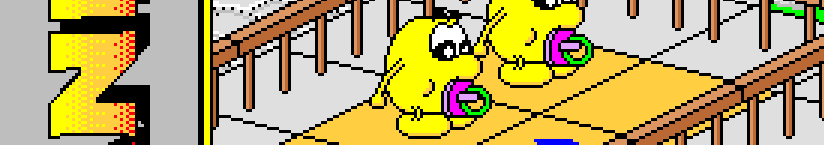

Blupimania
A mind boggling (brain twisting) game of logic
An unexpected rebirth
After a long search, the game's source code seemed lost forever. But one day, Daniel got his hands on a CD-R containing a disk image of his old Smaky. This image contained a lot of source code and, above all, the Blupimania source code for Smaky. Some time after this discovery, work on the port began in earnest at the end of 2021. It took almost 2 years (on spare time) to finally get to the end with a first re-release of the game. Of course, as with Planet Blupi, this re-release is entirely free under the GPLv3 license (source code and art files). The game runs natively on Linux, macOS and Windows.
This new edition is a subtle blend of the original Smaky and the DOS version. 3 languages are officially supported, along with music from the DOS version and the original Smaky sounds. A nod to the Smaky 100 is included in this version.
Scroll down or click here in order to download the game.
Un jeu de logique palpitant et implacable
Une renaissance inespérée
Après de longues recherches, le code-source du jeu semblait perdu pour toujours. Mais un jour, Daniel mis la main sur un CD-R qui contenait une image disque de son ancien Smaky. Dans cette image on y trouve plein de sources et surtout, le code de Blupimania pour Smaky. Quelque temps après cette découverte, les travaux de portage ont gentiment commencé à la fin 2021. Il a fallu presque 2 ans (sur du temps libre) pour enfin arriver au bout avec une première re-release du jeu. Bien entendu, comme pour Planète Blupi, cette réédition est entièrement libre sous licence GPLv3 (code-source et fichiers artistiques). Le jeu fonctionne nativement pour Linux, macOS et Windows.
Cette nouvelle édition est un subtile mélange entre la version Smaky et la version DOS du jeu original. Vous y trouverez les 3 langues officiellement supportées, les musiques de la version DOS avec des sons originaux de la version Smaky. Un clin d'oeil pour le Smaky 100 fait partie de cette réédition.
Faîtes rouler la molette vers le bas ou cliquez ici afin de télécharger le jeu.
Languages / Langues
- English
- French (Français)
- German (Deutsch)
Scenario
Blupi comes out of a hole holding on to a balloon. Unfortunately he let's it blow away. Blupi is lost, he turns to the left or the right and does various unpredictable things of his own. The object of the game is to help him find another balloon, so that he can move on to the next riddle. Blupimania offers the option of creating your own riddles in level 5.
Scénario
Accroché à un ballon, Blupi sort d'un trou. Malheureusement, son ballon s'envole. Perdu dans son monde, Blupi avance, tourne à gauche ou à droite et effectue diverses actions de sa propre initiative, sans que vous puissiez prévoir son comportement. Le but du jeu consiste à l'aider à retrouver un ballon, afin qu'il puisse repartir vers l'énigme suivante. Blupimania vous offre la possibilité de construire vos propres énigmes dans un niveau numéroté 5.
Game modes
There are more than 120 riddles in the game grouped in four different levels according to their difficulty. You have to solve one riddle to be able to move onto the next, but you can always change levels.
Blupi has no antenna
In this phase you have to direct one or more independent Blupi, by modifying the décor, e.g. by placing a fence to prevent Blupi from falling down a hole.
Blupi has an antenna
In this mode Blupi can be remote controlled. There may aIso be other independent Blupi moving around the screen. They too must be helped, as the riddie is not soived until every Blupi has found a balloon! You have to modify the world around them, e.g. to put a fence in place, you have to move the remote controlled Blupi to the place you have chosen.
Les modes de jeu
Le jeu comprend plus de 120 énigmes de quatre niveaux de difficulté. Il faut avoir résolu une énigme pour passer à la suivante. En revanche, il est toujours possible de changer de niveau.
Blupi sans antenne
Vous devez vous occuper d'un ou plusieurs Blupi autonomes, en agissant sur le décor pour influencer le déroulement du jeu, par exemple poser une barrière pour empêcher Blupi de tomber dans un trou.
Blupi avec antenne
Dans ce mode Blupi a une antenne, et c'est vous qui le télécommandez. D'autres Blupi autonomes peuvent aussi évoluer, et vous devez les aider, car tant que chaque Blupi n'a pas trouvé un ballon, l'énigme n'est pas résolue I Pour les aider, vous devez toujours modifier le monde environnant. Par exemple, pour poser une barrière, il faut amener le Blupi télécommandé devant l'emplacement choisi.
What's new
This new edition is based on the source code of the Blupimania game for Smaky. Unlike the DOS version, the Smaky version (for technical reasons) only includes music for the jingles (credits and success screens). The DOS version, on the other hand, includes music during game sessions, as well as English and German translations. There are also significant color differences between the two versions.
Here, the DOS and Smaky implementations have somehow been merged and enhanced. You'll find all 3 languages, music, Smaky-specific sounds, the colors of the DOS version and a mode for nostalgic Smaky 100 fans.
Compared with the DOS and Smaky versions of the game, player
progression is now clearer. I invite you to discover all this
for yourself.
Enjoy!
ChangeLog v1.6
| New | Whole source-code and art files under GPL3+ license |
|---|---|
| New | Support of GNU/Linux, macOS and Windows |
| New | Add a checker for new versions (text update blinking on the home screen) |
| New | Add a new screen for display and languages settings |
| New | Use a static build (should work for years on all operating systems) |
| New | Improved player progression informations |
| New | Stereo sound |
| New | Support for English, German and French |
| New | Smaky 100 special mode |
| Bug | Improvements / fixes in the sprites |
| Bug | A lot of engine improvements |
Quoi de neuf
Cette nouvelle édition est basée sur le code source du jeu Blupimania pour Smaky. Contrairement à la version DOS, la version Smaky (pour des raisons techniques) ne comportent que les musiques des jingles (générique et écrans de succès). La version DOS comporte, elle, des musiques pendant les sessions de jeu ainsi que des traductions en anglais et en allemand. Il est possible également de découvrir des différences importantes de couleurs entre les deux versions.
Ici, les implémentations DOS et Smaky ont en quelques sorte été fusionnées et améliorées. Vous y trouverez les 3 langues, de la musique, des sons spécifiques du Smaky, les couleurs de la versions DOS ainsi qu'un mode pour les nostalgiques du Smaky 100.
Par rapport aux version DOS et Smaky du jeu, la progression
des joueurs est désormais plus clair. Je vous invite à
découvrir tout celà par vous même.
Bon Jeu !
Journal v1.6
| Nouveauté | L'entier du code-source ainsi que des fichiers artistiques sont sous licence GPL3+ |
|---|---|
| Nouveauté | Prise en charge de GNU/Linux, macOS et Windows |
| Nouveauté | Ajoute un mécanisme de détection des nouvelles versions (un texte de mise à jour clignote dans l'écran d'accueil) |
| Nouveauté | Ajoute un nouvel écran de réglages pour l'affichage et le choix de la langue |
| Nouveauté | Utilise une construction statique (le jeu devrait fonctionner pour de nombreuses années sur tous les systèmes d'exploitations) |
| Nouveauté | Amélioration de la présentation de la progression du joueur |
| Nouveauté | Son en stéréo |
| Nouveauté | Intégration de l'anglais, l'allemand et du français |
| Nouveauté | Mode spécial Smaky 100 |
| Correctif | Améliorations / corrections dans les images |
| Correctif | De nombreuses améliorations du moteur |
Downloads / Téléchargements
GNU/Linux // x86-64
It should work on "all" GNU/Linux distributions.
Standalone AppImage version, just add the executable flag and play.
Cette version devrait fonctionner sur toutes les distributions GNU/Linux.
Version AppImage tout-en-un, simplement ajouter le droit d'exécution et jouer.
macOS // x86-64, arm64
macOS ≥ 10.13 / 11.0.
Open the DMG image, copy the game in the Applications directory or where you want or execute directly from the image.
macOS ≥ 10.13 / 11.0.
Ouvrir l'image DMG, copier le jeu dans le dossier Applications ou où vous le souhaitez ou exécuter directement le jeu depuis l'image.
Windows // x86-64
Windows 7, 8, 8.1, 10, ...
Windows version which can be installed with this NSIS installer. Just start the game with the shortcut installed in you start menu.
Windows 7, 8, 8.1, 10, ...
Version Windows qui est installée avec l'aide d'un installeur NSIS. Exécuter le jeu via le raccourci déployé dans le menu démarrer.
Divers
| Manuals / Manuels | PDF (scan) | DOS & Win | English Français Deutsch | |
|---|---|---|---|---|
| PDF (print) | DOS & Smaky | DOS Smaky Smaky Info | ||
|
Competition riddles / Enigmes du concours |
DAT | blupixh.dat |
Some riddles are part of the official game |
|
Join the community
The whole source-code and all art files are available on GitHub.
Feel free to donate something if you want. The money will be used for paying the hosting, domains and the certificates for example. It's not intended to be used for stuff unrelated to the Blupi games. (For CoLoBoT, Buzzing Cars and Blupimania 2, please look at colobot.info)
Rejoindre la communauté
L'ensemble du code-source et des fichiers artistiques sont disponibles sur GitHub.
Libre à vous de donner quelques sous si vous le souhaitez. L'argent sera utilisé, par exemple, pour financer l'hébergement, les noms de domaines et les certificats. Cet argent n'est en aucun cas utilisé pour autre chose que ce qui concerne les jeux Blupi. (Concernant CoLoBoT, Buzzing Cars et Blupimania 2, je vous invite à vous référer à colobot.info)
Copyrights / Droits d'auteur
Blupimania
and all resource files are licensed to the GPLv3+ license.
This game is an original creation of
Epsitec SA and
Daniel Roux.
Blupimania
et tous les fichiers de ressource sont sous licence GPLv3+. Ce
jeu est une création originale d'Epsitec SA
et de Daniel Roux.
| Developers / Développeurs | 1994-1996 | Daniel Roux |
|---|---|---|
| 1995-1996 | Michaël Walz (DOS port) | |
| 2023 | Mathieu Schroeter | |
| Translators / Traducteurs | 1995-1996 | Michaël Walz, David Besuchet |
| Levels / Niveaux | 1994-1995 | Daniel Roux, Denis Dumoulin, Anny-Sylvie Crisinel, Jean-François Crisinel |
| Testers / Testeurs | 2023 | Nathan Schroeter, Aurore Schroeter |
List of statically linked libraries / Liste des bibliothèques liées statiquement
| libasound | LGPLv2.1 | provides audio and MIDI functionality to the Linux operating system |
|---|---|---|
| libcurl | MIT/X derivate | a free and easy-to-use client-side URL transfer library |
| libogg | own license | a free, open container format maintained by the Xiph.Org Foundation |
| libpng | own license | the official PNG reference library |
| libpulse | LGPLv2.1 | API for the PulseAudio network-capable sound server program |
| libsndfile | LGPLv3 | a C library for reading and writing files containing sampled sound |
| libvorbis | own license | a free and open-source software project headed by the Xiph.Org Foundation |
| libwebp | google license | a modern image format that provides superior lossless and lossy compression for images on the web |
| SDL2 | zlib license | a cross-platform software library designed to provide a HAL to computer multimedia hardware |
| SDL2_image | zlib license | an image loading library that is used with the SDL library |
| SDL2_mixer | zlib license | a sound mixing library that is used with the SDL library |
| zlib | own license | a Massively Spiffy Yet Delicately Unobtrusive Compression Library |